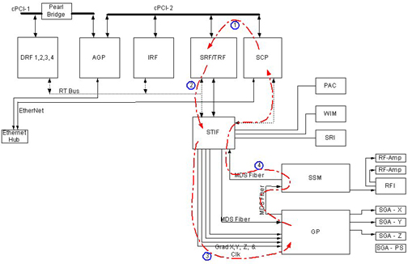

Proprietary to General Electric Company
Direction 5670006, Rev# 1
Discovery MR750w GEM Service Methods
Module Version 1.0, Version Date 4/26/07
Proprietary to General Electric Company |
Diagnostics >> Peripherals >> Gradient Diagnostics
The purpose of this diagnostic is to check the ability of the Gradient Processor (GP) to detect data errors in the gradient data connections between the STIF board and the GP board.
This test is performed several times with different test patterns to ensure functionality.
FRUs in Test:
SRF/TRF
STIF
Four (4) gradient fibers
GP3
This test will automatically prompt you to verify that a TPS Reset has been recently performed.
Illustration 1: Gradient Hammer Test Functional Block Diagram

| NOTE: | The GP3 checks for corrupted clock before running this test. The test gets aborted if a corrupted clock is found and logs an error message. |
SCP programs the WARP on TRF to send out test data.
TRF sends the test data to STIF.
STIF transmits data to GP3 using the 4 gradient fibers.
GP3 verifies the data and sends the test results to SCP over the CAN link.
The SCP repeats the test several times with other test data patterns.
| NOTE: | The Test Options settings should not be changed from their default settings unless instructed to do so by a GE Healthcare engineer. There are very few circumstances when these settings ever need to be changed. |
The diagnostic will return PASS or FAIL.
Although, in the case of errors you can click the 1st Error number to see the nature of the error, it is recommended that you view the GE System Log to view all the errors that were recorded.
A full list of errors is available in the GE System Logs.
Click [Calculate Time] to get an estimate of the time it will take to run the selected diagnostics.